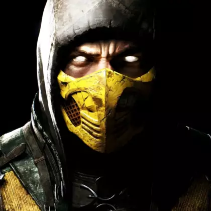

Scorpion
Скорпион (Ханзо Хасаши) — ниндзя-призрак из клана Ширай Рю. В сюжете Mortal Kombat X он воскрешает свой клан, заключает союз с Рейденом и после многолетней мести убивает колдуна Куан Чи, положив конец многолетней вражде с Саб-Зиро.
🔥 Фирменный стиль и Вариации (МК
XL)В Mortal Kombat XL Скорпион представлен в нескольких стилях,
которые меняют его комбо-потенциал:
Инферно (Inferno): Позволяет
вызывать демонов из Преисподней, чтобы оглушить противника или
продлить комбо. Идеален для агрессивного прессинга.
Ниндзюцу
(Ninjutsu): Добавляет в арсенал удары двойными мечами, увеличивая
радиус поражения обычных атак
Адское пламя (Hellfire): Дает огненные
шары и возможность создавать ауру, наносящую постоянный урон врагу,
который находится рядом.